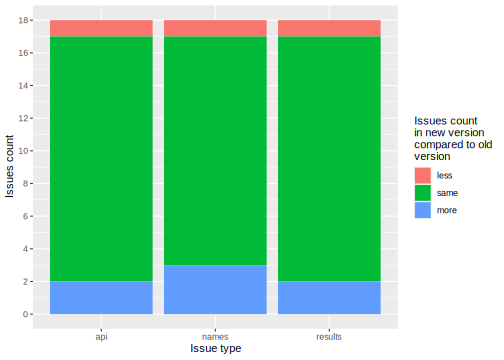

Chapter 1 Reproducibility of scientific papers
This chapter contains a wide range of studies on the reproducibility of scientific articles. Each subsection is a self-contained paper answering a different research problem.
Please, note that each subsection contains a work of different authors and therefore subsections may differ at some points, for example, definitions of reproducibility used in particular studies.
1.1 Title of the article
Authors: Author 1, Author 2, Author 3 (University)
1.1.1 Abstract
1.1.2 Introduction and Motivation
1.1.4 Methodology
1.1.5 Results
1.1.6 Summary and conclusions
1.2 How to measure reproducibility? Classification of problems with reproducing scientific papers
Authors: Paweł Koźmiński, Anna Urbala, Wojciech Szczypek (Warsaw University of Technology)
1.2.1 Abstract
1.2.2 Introduction
The idea of reproducibility of scientific researches is crucial especially in the area of data science. It has become more important along with the development of methods and algorithms used in machine learning as they are more and more complex and complicated. This issue concerns users of all types: students, scientists, developers. Moreover, attaching code used in a paper, helps readers to focus on the real content rather than sophisticated explanations and descriptions included in the article. It is also valuable because the users can use the code as examples of using the package.
However problem of the reproducibility is much more complex, because there is no explicit way of measuring it. It means that most of its definitions divide articles into 2 groups - reproducible and irreproducible. Thus, finding an appropriate reproducibility metrics, which would have wider set of values would result in changing the way reproducability is perceived. As a result such a metric would provide much more information for a person who would be interested in reproducing an article.
1.2.2.1 Definition
Reproducibility as a problem has been addressed by scientists of various fields of studies. The exact definition also differs among areas of studies. For instance, Patrick Vandewall in 2009 suggested a definition of a reproducible research work: “A research work is called reproducible if all information relevant to the work, including, but not limited to, text, data and code, is made available, such that an independent researcher can reproduce the results” (Vandewalle, Kovacevic, and Vetterli 2009). On the other hand, Association for Computing Machinery (Computing Machinery 2018) divides the problem into three tasks as follows:
* Repeatability (Same team, same experimental setup):
The measurement can be obtained with stated precision by the same team using the same measurement procedure, the same measuring system, under the same operating conditions, in the same location on multiple trials. For computational experiments, this means that a researcher can reliably repeat her own computation.
Replicability (Different team, same experimental setup):
The measurement can be obtained with stated precision by a different team using the same measurement procedure, the same measuring system, under the same operating conditions, in the same or a different location on multiple trials. For computational experiments, this means that an independent group can obtain the same result using the author’s own artifacts.Reproducibility (Different team, different experimental setup):
The measurement can be obtained with stated precision by a different team, a different measuring system, in a different location on multiple trials. For computational experiments, this means that an independent group can obtain the same result using artifacts which they develop completely independently.
For the needs of this chapter we will use the Vandewalle’s definition and treat papers as fully reproducible only when they meet the conditions listed there.
1.2.4 Methodology
We considered plenty of papers from many issues of The R Journal - one of the most popular magazines concerning scientific researches, including new R packages. The journal stands out from the magazines because the researches usually upload supplementary material with their articles so it is very easy to check if the code can be reproduced in right way. The articles we checked during our research were published in various years - the newest comes from December 2019 while the oldest is from 2010. We have to admit that the majority of articles could be reproduced without any problems. For the needs of this article we mention only papers where any problems occured.
As we faced the problem of measuring reproducibility we discussed many ways of grading its level. One of the ideas was to create a unified measure of value that would calculate the ratio of functions that managed to execute. We quickly noticed that this approach is not appropriate as sometimes it is not fair to dock the mark by the same value in various examples. For instance we could meet a minor problem that interefered with executing an additional feature and, on the other hand, a vast problem that was a reason that we could not produce an important plot at all. Moreover, sometimes the success of executing the function, was not only defined by completing the work without errors but by the quality of output. Sometimes the plots were produced without any number values what made them absolutely useless or without one minor annotation which still allowed to make similar conclusions as authors.
These were the reasons why we did not decide to create a simple numeric measure of reproducibility, which probably would be very convenient for data scientists, especially statisticians. When we were checking the articles in terms of reproducibility we noticed that the problems we are facing can be group into a few categories of similar ones. It was on impulse to propose six major categories that can be faced during try of reproducing the results presented in a scientific paper:
* No access to external resources
Some parts of code require access to external resources, for example third-party API or data downloaded from web. If the data was removed from the website, we may have a problem (or it can be impossible!) reproducing the results.
* No compatibility with current versions of used packages
Some packages are deprecated or only available in the older version of R. It can cause problems and is unacceptable.
* Code vulnerable to user settings (especially graphic issues)
The output often depends on the environment settings. For example the scale of the graphics can make it illegible and useless. There were cases that the code attached to article produced completely different figure than the presented one.
* Additional configuration required
Some packages require a non-standard installation. To use some features it can be required to install system packages. Sometimes it is also required to take additional steps (configure access to API e.t.c.).
* Randomness problems
Some functionalities are based on randomness. Sometimes changing the seed may change the results and make it difficult to draw correct conslusions.
* No access to source codes
Some results shown in an article could not be reproduced because the codes had not been attached to or included in the article.
We developed a 5-point scale (1 - completely irreproducible, 5 - fully reproducible) evaluating in what degree these problems belong to each category. Points are assigned subjectively depending on our feeling of the severity of the problem. When a category did not appear in the article it was signed as N/A - not applicable. To minimilize the affect of the personal feels, every article was checked independently by at least two persons.
1.2.4.1 Mark examples
Most of the articles were reproducible to some extent. None of them were fully irreproducible. However there were few examples, where inability of compiling the first chunks of code resulted in very low marks for the article and thus giving it up with no further research being carried through. Perfect example of such behaviour can be found in an article “MCMC for Generalized Linear Mixed Models with glmmBUGS”, where all of the following code chunks depended on first ones, which couldn’t be compiled. The reason was that the function, which was resposible for making crucial calculations couldn’t find a registry address. It ended up with displaying both the error and warning message. Second thing which led to lowering the mark was difficulty with code availibility. There were articles, for instance “RealVAMS: An R Package for Fitting a Multivariate Value-added Model (VAM)”, where there were no source codes for all of the figures, which were used in article. Moreover the figures were the main part of the article, thus we decided to lower the mark for access to the source code. Fortunately our team of scientists managed to reproduce the results, despite lack of source code. This article was also an example of having attached obsolete data. It resulted in poor similarity of graphs and plots between the figures we made ourselves and those, which were used in article. Majority of articles were given very satsfying marks, beacuse there were only a few things we could complain about. Fortunately they didin’t have such an impact on reproducibility itself, but rather were annoying for someone who wanted to achieve the same results. The perfect example of such an article is “tmvtnorm: A Package for the Truncated Multivariate Normal Distribution”. The code had to be manually copied from the article and then reformatted before pasting in into the R console. It’s not a major obstacle, but it may lead to some syntax mistakes and enlengthen the time needed to reproduce the results.
1.2.5 Results
During the research, our team of scientists examined 16 scientific articles published in The R Journal in terms of reproducibility. As stated before, we decided to divide a mark into six categories and check the level of correctness with the results described in the paper. Every category was graded in five-point scale provided always that a category might not apply in a paper. However, we did not measure the effectivity or functionality of the code as it was not in the scope of this research. To avoid the effect of subjectivity, all articles were graded by at least two of us. Later we calculated the average of the marks. When any category was marked as “not applicable” by at least one marker, it was not taken into consideration in the final summary.
| Title | Year of Release | Authors | Source |
|---|---|---|---|
| GrpString: An R Package for Analysis of Groups of Strings [1] | 2017 | H. Tang, E. Day, M. Atkinson, N. Pienta | The R Journal |
| mmpf: Monte-Carlo Methods for Prediction Functions [2] | 2017 | Z. Jones | The R Journal |
| RealVAMS: An R Package for Fitting aMultivariate Value-added Model (VAM) | 2017 | J. Broatch, J.Green, A. Karl | The R Journal |
| shadow: Geometric Shadow Calculations | 2018 | M. Dorman, E. Erell, A. Vulkan, I. Kloog | The R Journal |
| Mapping and Measuring Country Shapes | 2010 | Nils B. Weidmann and Kristian Skrede Gleditsch | The R Journal |
| tmvtnorm: A Package for the Truncated Multivariate Normal Distribution | 2010 | Stefan Wilhelm and B. G. Manjunath | The R Journal |
| MCMC for Generalized Linear Mixed Models with glmmBUGS | 2010 | Patrick Brown and Lutong Zhou | The R Journal |
| Drawing Diagrams with R | 2009 | Paul Murrell | The R Journal |
| Geospatial Point Density | 2018 | Paul F. Evangelista and David Beskow | The R Journal |
| rainbow: An R Package for VisualizingFunctional Time Series | 2011 | Han Lin Shang | The R Journal |
| stplanr: A Package for Transport Planning | 2018 | Robin Lovelace, Richard Ellison | The R Journal |
| BINCOR: An R package for Estimatingthe Correlation between Two UnevenlySpaced Time Series | 2019 | Josue M. Polanco-Martinez, Martin A. Medina-Elizalde, Maria Fernanda Sanchez Goni, ManfredMudelsee | The R Journal |
| RSSampling: A Pioneering Package forRanked Set Sampling | 2019 | Busra Sevinc, Bekir Cetintav, Melek Esemen and Selma Gurler | The R Journal |
| Fixed Point Acceleration in R | 2018 | Stuart Baumann and Margaryta Klymak | The R Journal |
| Nowcasting: An R Package for PredictingEconomic Variables Using DynamicFactor Models | 2018 | Serge de Valk, Daiane de Mattos and Pedro Ferreira | The R Journal |
| Raster Images in R Graphics | 2011 | Paul Murrell | The R Journal |
The summary of our marks is presented in the boxplot.

alt text
As we can see in the plot, packages dependent on external resources are in a minority. Despite that, when we examined one, there was often a problem with dependencies. It could be caused by many reasons, e.g. external data sources or other packages. On the other hand, availability of the source code and graphical aspects of articles turned out to be the most reproducible categories. Resistance to randomness was one of the most interesting categories in our opinion and it turned out to be a category with high variation of grades. Many authors coped with the problem by setting random seeds but sometimes the differences were unavoidable.
1.2.6 Summary and conclusions
1.3 Aging articles. How time affects reproducibility of scientific papers?
Authors: Paweł Morgen, Piotr Sieńko, Konrad Welkier (Warsaw University of Technology)
1.3.1 Abstract
Reproduction of a code presented in scientific papers tend to be a laborious yet important process since it enables readers a better understanding of the tools proposed by the authors. While recreating an article various difficulties are faced what can result in calling the paper irreproducible. Some reasons why such situations occur stem from the year when the article was published (for example usage of no more supported packages). The purpose of the following paper is to prove whether this is a general trend which means answering the question: is the year when the article was published related to the reproducibility of the paper. To do so a package CodeExtractorR was created that enables extracting code from PDF files. By using this tool a significant number of articles could be analyzed and therefore results received enabled us to give an objective answer to the stated question.
1.3.2 Introduction
Every article published in a scientific journal is aimed at improving our knowledge in a certain field. To prove their theories, authors should provide papers with detailed, working examples and extensive supplementary materials to reproduce results. Unfortunately, these conditions are not always fulfilled. In such a case, other researchers are not able to verify and accept the solutions presented by the author. Moreover, the article is not only useless for the scientific community but also for business recipients.
Over the years, several different definitions of reproducibility have been proposed. According to Gentleman and Temple Lang (2007), reproducible research are papers with accompanying software tools that allow the reader to directly reproduce methods that are presented in the research paper. Other authors suggest that scientific paper is reproducible only if text, data and code are made available and allow an independent researcher to recreate the results (Vandewalle, Kovacevic, and Vetterli 2009). Second definition emphasizes the importance of accessibility to data used in researches, therefore it seems to be more suitable and complete interpretation of reproducibility. In addition, in this article, we used scale based on the spectrum of reproducibility, proposed by Peng (2011). In his work, he also mentioned reproducibility as a minimal requirement for assessing the scientific value of the paper. In the past few years, computing has become an essential part of scientific workflow. Some best practices for writing and publishing reproducible scientific article were presented by Stodden et al. (2013). Furthermore, she made a brief overview of existing tools and software that facilitate this task. Similar issue was closely described by Kitzes, Turek, and Deniz (2017). Tools created solely for reproducibility in R were proposed by Marwick (n.d.) in package rrtools.
Although many articles focus on software or framework solutions for reproducibility problems, analysis of scientific papers reproducibility in the context of release date has, to the best of the authors’ knowledge, not been described before. The intention of such research is to find correlations between age of article and its reproducibility. Authors believe that finding these dependencies will allow to calculate the estimated life span of data science article. Furthermore, as replicability helps with applying proposed methods and tools, its approximated level might be helpful in estimating usefulness of every scientific article.
1.3.3 Methodology
The first issue that should be touched upon, while considering the methodology behind preparing this article, is the scale used to assess the reproducibility of the papers. In the Introduction it was already mentioned how the scale was created but a more detailed description is required. The authors decided that the scale should consist of 4 levels (from 0 up to 3):
- The 0 grade was given in case when no chunk of code gave the anticipated results and no figure was reproduced successfully (in practice such situation occurred mainly when the package described in the article was no more available).
- The 1 grade means that at least one example gave the results that the authors waited for, while it also includes situations when about half of the code in the chunks behaved as expected.
- The 2 grade was awarded to the articles that were reproducible “in the majority” what also means that they were not reproducible in 100%.
- The 3 grade was received by the articles that were fully reproducible and no problems were encountered in the process. Such a result was highly anticipated by the authors but the criteria for this grade were rather strict.
The second issue that also played a vital role in the authors’ work was the scope of the analysis. It was decided that in order to maintain “other thing equal” according to a well-known Latin phrase “ceteris paribus” only one online journal – The R Journal – was taken into account. Being equipped with a tool for faster reproduction of articles – the CodeExtractoR package – the authors agreed to examine about 20 articles that were published across a few years. Such a great number of papers meant that the approach taken could be described as holistic. It is also worth mentioning that usually 30 articles from each year were analyzed (at least whenever it was possible). Finally, it should be noted that in the case of the date when they were published the examined articles range from 2009 up to 2019. The third and final issue that should be considered in this part of the article focuses on the measures undertaken by the authors in order to tackle the problem of biased assessment. Although the scale that was proposed was not totally dependent on the person who was using it, it still left someplace for personal liking and disliking of the paper. As a way of marginalization of this trend the authors have taken part in many conversations when the facts that led to specific grading of the articles were shared. This enabled awarding the grades even more fairly. However, the final measure was much more simple and it was believed to be much more effective as well when compared to the previous one. The articles for each year were divided into 3 groups and assigned to one author each. Thus each author has examined the papers from the whole range of release dates that were taken into account.
1.3.4 Results
Specific results are presented in Table 1.1, which shows the number of examined articles from 2009 up to 2019, grouped by received grade. The column “Grade” represents the 0 - III scale of reproducibility. The rest of the columns shows a number of papers that achieved a particular grade in each year.
| Grade | 09’ | 10’ | 11’ | 12’ | 13’ | 14’ | 15’ | 16’ | 17’ | 18’ | 19’ |
|---|---|---|---|---|---|---|---|---|---|---|---|
| 0 | 3 | 2 | 6 | 4 | 6 | 8 | 5 | 9 | 5 | 9 | 9 |
| I | 4 | 2 | 0 | 2 | 3 | 6 | 6 | 10 | 3 | 2 | 2 |
| II | 3 | 7 | 8 | 4 | 13 | 6 | 10 | 7 | 14 | 6 | 6 |
| III | 6 | 7 | 6 | 5 | 8 | 10 | 9 | 4 | 8 | 13 | 13 |
| SUM | 16 | 18 | 20 | 15 | 30 | 30 | 30 | 30 | 30 | 30 | 30 |
To better illustrate obtained data, in Figure 1.1 we have split the results into two groups - the articles which have 0 or I class labeled as “Non-reproducible” and articles with grade II and III as “Reproducible”. It is important to remember that from 2009 to 2012, the overall number of papers oscillated around 18 per year. After 2013, the number of researched articles was constant.

FIGURE 1.1: Number of papers by publication year
Figure 1.2 shows the results in the original 4-level scale. Although, the number of papers varies throughout the years in every reproducibility class, it is observable that intermediate ones - I and II, are less common in the oldest and newest papers. In addition, results in 2018 and 2019 are identical.

FIGURE 1.2: Number of papers by class and publication year
After calculating the percentage of each class in a specific year ( Figure 1.3, Figure 1.4), it is observed, that in the two oldest examined years - 2009 and 2010 - a ratio of completely unreproducible papers (with 0 or I class ) is surprisingly low. Furthermore, papers with III class of reproducibility are nearly 40% of all articles in these years.

FIGURE 1.3: Ratio of each class throughout years
Except for 2019, 2018 and 2016, percentage of fully reproducible papers (III class) is stable. In the newest articles, this percentage is slightly higher. Year 2016 is the only one, where unreproducible papers were in the majority. Only in 3 cases, percentage of reproducible articles dropped below 60%.

FIGURE 1.4: Summarized results throughout years
1.3.5 Conclusions
1.3.6 Summary
1.4 Ways to reproduce articles in terms of release date and magazine
Authors: Mikołaj Malec, Maciej Paczóski, Bartosz Rożek
1.4.1 Abstract
1.4.2 Introduction and Motivation
Reproducibility is a topic which is quite diminished in today’s science world. Scientific articles should be current as long as possible. Their results should be achievable by reader and be the same. Thanks to that science and business world can take advantage of them.The more article is difficult to reproduce, the chance of using knowledge coming from it is smaller. Many researchers tried to define or give principles for reproducibility. There is article published in 2016: “What does research reproducibility mean?” (Goodman, Fanelli, and Ioannidis 2016b) which tried to warn about reproducibility crisis. Article in 2017: “Computational reproducibility in archaeological research: basic principles and a case study of their implementation” (Marwick 2016), compered computational reproducibility to archaeological research and give guidelines for researches to use reproducibility in computing research. But these are just two of many articles about reproducibility. Some articles are about tools and techniques for computational reproducibility (Piccolo and Frampton 2016). They encourage researchers to compute data using environments like Jupiter (Thomas et al. 2016) or R markdown (Marwick, Boettiger, and Mullen 2017). Thanks to that readers can reproduce finding on their own. What’s new about our approach to the subject of reproducibility is focusing on how can release date and magazine affect the amount of work needed to fully reproduce code or is it even possible. A comprehensive comparison of scientific magazines in terms of reproducibility is yet to be created and this article is our best effort to make it happen. Mikołaj Malec
1.4.4 Methodology
1.4.5 Results
1.4.6 Summary and conclusions
1.5 Reproducibility of outdated articles about up-to-date R packages
Authors: Zuzanna Mróz, Aleksander Podsiad, Michał Wdowski (Warsaw University of Technology)
1.5.1 Abstract
1.5.2 Introduction and Motivation
The problem of the inability to reproduce the results of research presented in a scientific article may result from a number of reasons - at each stage of design, implementation, analysis and description of research results we must remember the problem of reproducibility - without sufficient attention paid to it, there is no chance to ensure the possibility of reproducing the results obtained by one team at a later time and by other people who often do not have full knowledge of the scope presented in the article. Reproducibility is a problem in both business and science. Science, because it allows credibility of research results (McNutt 2014). Business, because we care about the correct operation of technology in any environment (Anda, Sjøberg, and Mockus 2009). As cited from “What does research reproducibility mean?” (Goodman, Fanelli, and Ioannidis 2016b); “Although the importance of multiple studies corroborating a given result is acknowledged in virtually all of the sciences, the modern use of “reproducible research” was originally applied not to corroboration, but to transparency, with application in the computational sciences. Computer scientist Jon Claerbout coined the term and associated it with a software platform and set of procedures that permit the reader of a paper to see the entire processing trail from the raw data and code to figures and tables. This concept has been carried forward into many data-intensive domains, including epidemiology, computational biology, economics, and clinical trials. According to a U.S. National Science Foundation (NSF) subcommittee on replicability in science, “reproducibility refers to the ability of a researcher to duplicate the results of a prior study using the same materials as were used by the original investigator. That is, a second researcher might use the same raw data to build the same analysis files and implement the same statistical analysis in an attempt to yield the same results…. Reproducibility is a minimum necessary condition for a finding to be believable and informative.”
1.5.4 Methodology
We have checked 13 articles with 16 R packages from at least 10 years ago to ensure that the code chunks match these categories:
- ade4: Implementing the Duality Diagram for Ecologists (Dray and Dufour 2007)
- untb: an R Package For Simulating Ecological Drift Under the Unified Neutral Theory of Biodiversity (Hankin 2007)
- bio.infer: Maximum Likelihood Method for Predicting Environmental Conditions from Assemblage Composition (Yuan 2007)
- pls: principal Component and Partial Least Squares Regression in R (Mevik and Wehrens 2007)
- EMD: Empirical Mode Decomposition and Hilbert Spectrum (Kim and Oh 2009)
- AdMit: Adaptive Mixtures of Student-t Distributions (Ardia, Hoogerheide, and Dijk 2009)
- asympTest: A Simple R Package for Classical Parametric Statistical Tests and Confidence Intervals in Large Samples (Coeurjolly et al. 2009)
- PMML: An Open Standard for Sharing Models (Guazzelli et al. 2009)
- neuralnet: Training of Neural Networks (Günther and Fritsch 2010)
- mvtnorm: New Numerical Algorithm for Multivariate Normal Probabilities (Mi, Miwa, and Hothorn 2009)
- tmvtnorm: A Package for the TruncatedMultivariate Normal Distribution (Wilhelm and Manjunath 2010)
- party: A New, Conditional Variable-Importance Measure for Random Forests Available in the party Package (Strobl, Hothorn, and Zeileis 2009)
- deSolve, bvpSolve, ReacTran and RootSolve: R packages introducing methods of solving differential equations in R (Soetaert, Petzoldt, and Setzer 2010)
In our research on the subject we have decided to divide the code from the articles into chunks, according to the principle that each chunk has its own output, to which we give an evaluation according to the criteria we have set. In the process of testing and reproducing various articles, we have identified five categories, and marked them as follows:
- NO REP (no reproducibility, either due to changes through time or problems with the article that had already been there, regardless of differences in R across years),
- HAD TO CHANGE STH (when we had to modify the code to produce correct results that will work in our current R version and can be neatly displayed in a document generated by markdown),
- MOSTLY REP (when the results were not ideally identical to the original, but in our opinion the chunks were working according to their purpose in the context of their article),
- HAD TO CHANGE & STILL SOMEWHAT DIFFERENT (the code had to be changed and the results were not perfect, but they were correct in the terms of the aforementioned category “MOSTLY REP”, but we could consider them as satisfactory),
- FULLY REP (no reproductive problems - the results were identical to original results shown in the article).
These criteria can be considered not subjective, but setting such boundaries does not cause confusion in categorisation, thus we decided to use them in order to research and describe the introduced number of articles about R packages from at least 10 years ago.
1.5.5 Results
Here can be seen the in-depth report. Below are the summarised results of our research.
| NAZWA | NOREP | CHANGE | MOSTLY | CH.SD | FULLY | SUM |
|---|---|---|---|---|---|---|
| ade4 | 0 | 0 | 2 | 1 | 4 | 7 |
| untb | 7 | 0 | 2 | 0 | 12 | 21 |
| bio.infer | 0 | 3 | 5 | 0 | 6 | 14 |
| pls | 0 | 0 | 11 | 0 | 21 | 32 |
| EMD | 0 | 0 | 1 | 0 | 15 | 16 |
| AdMit | 0 | 1 | 3 | 0 | 2 | 6 |
| asympTest | 0 | 0 | 3 | 0 | 2 | 5 |
| PMML | 0 | 1 | 0 | 0 | 3 | 4 |
| neuralnet | 1 | 0 | 8 | 0 | 0 | 9 |
| mvtnorm | 0 | 1 | 0 | 0 | 0 | 1 |
| tmvtnorm | 0 | 0 | 0 | 0 | 6 | 6 |
| party | 0 | 0 | 2 | 0 | 0 | 2 |
| deSolve | 0 | 0 | 0 | 0 | 3 | 3 |
| bvpSolve | 1 | 0 | 1 | 0 | 1 | 3 |
| ReacTran | 0 | 0 | 0 | 0 | 1 | 1 |
| RootSolve | 0 | 0 | 1 | 0 | 5 | 6 |
| SUM | 9 | 6 | 39 | 1 | 82 | 137 |
As it can be seen, the vast majority of chunks are fully reproducible. Even if the chunk is not executed identically to the original one, in most cases it differs only slightly, and the package itself serves its purpose. 88.3% (121/137) of the chunks are executed perfectly or correctly (within our subjective category of being acceptably incorrect), while 93.4% (128/137) of the chunks are working well enough not to throw errors. In practice, only 6.6% (9/137) of chunks were completely irreproducible, which would seem surprising for more-than-a-decade-old articles.
However, given that we have focused particularly on packages that are still being developed, this is quite a feasible result. This can be seen quite clearly by the percentage of the chunks that required minor changes or slightly differed from the results shown in the article - there were 33.6% (46/137), which is clearly a result of the updates or changes that occured in the ever evolving R environment. Of course during our research we stumbled upon numerous packages that have not been updated since years or that have even been deleted from CRAN repository, so they were not within our field of interest. Nonetheless, we would like to emphasize that the results should not suggest that one-decade-old articles are reproducible.
In some of the articles we found specific types of problems:
- There was no access to data or objects referred to in later calculations,
- The results were similar to the original, but the differences were most often due to the random generation of objects. This error was usually reduced later, when the package created some kind of data summary - then the result had a very small relative error with the original result.
- The names of individual variables or some of their attributes changed (e.g. column names in the data frame).
1.5.6 Summary and conclusions
To sum up, in most cases the packages we examined performed their tasks correctly. The packages themselves have of course changed, but its idea remained the same. Usually new features or improvements were added, but the idea behind the package was the same as it used to be. As a result, most of the packages still managed to cope with the problems of the old ones, in reproduction usually suffering from missing external data or unavoidable changes in the R language itself. All in all, almost in all cases the package does the job in spirit, differing from its old good ways only in vague confusion caused by neverending winds of change.
It can therefore be concluded that most packages that we’ve checked are fully backward compatible, which is good programming practice. In order to increase the reproducibility of articles, this should definitely be taken care of. Additionally, authors should include supplements to their articles, that always help you understand and copy the code.
1.6 Correlation between reproducibility of components of research papers and their purpose
Authors: Przemysław Chojecki, Kacper Staroń, Jakub Szypuła (Warsaw University of Technology)
1.6.1 Abstract
1.6.2 Introduction and Motivation
It is common knowledge that reproducibility is a way for science to evolve. It is the heart of the scientific method to revisit pre-existing measurements and to try to reproduce its results. However, the term „reproducibility” itself, as well it is crucial to the scientific methodology, it can be also universal at the expense of unambiguousness and usability.
For the purpose of this paper we will have recourse to the definition introduced by ACM:
Reproducibility - The measurement can be obtained with stated precision by a different team, a different measuring system, in a different location on multiple trials. For computational experiments, this means that an independent group can obtain the same resultusing artefacts which they develop completely independently.
This particular definition ilustrates perfectly how in the course of establishing the meaning of term „Reproducibility”, the level of importance of auxiliary measurements and settings of the experiment to the overall results is omitted. It is notably significant misconception especially in the experiments from the field of computional science, when reproducing or even maintaining precise operating conditions is usually impossible.
In the following chapters we will attempt to perform an analysis of reproducibility of the papers submitted to the RJournal, regarding especially presumed objectives of enclosed auxilliary computations and artifacts (i. e. code chunks) in overarching structure of a given paper.
1.6.4 Methodology
1.6.4.1 General approach
The methodology presented in the following section is a direct consequence of how we approach scientific article as an experience devised by an author for the reader. Our focus is to determine, how author alter this experience by using code chunks instead of plain text. In other words, we ask a question “Why have the authors used the R code?”
Assumption that execution of enclosed code is an integral part of said experience and by extension code chunks supposed to be reproducible for reader to percept the article as intended seems to be reasonable.
However it may not be correct in every case.
Let us consider a situation, where generated output is essential to the thesis stated in the article. If the code is irreproducible, the reader cannot believe the authors. It devastates their credibility.
But what if a goal of the code was to illustrate general tendency in data and output is reproducible only to some degree? Then it may still fulfill its purpose in the article and the lack of full reproducibility does not intefere with experience for a reader.
Following this thought process inevitably leads to new questions, f.e. is it possible for executable code to serve its purpose in article while being completely unreproducible?
To explore this topic we decided to focus on objectives of code in scientific papers.
We have decided that the most accurate and reliable way of finding the purposes of code chunks in scientific articles is by examples. That is why we have analyzed over \(30\) papers from The R Journal [https://journal.r-project.org].
We have gathered the code chunks into groups and considered a three degree of purpose: the whole article, the group of chunks, and the single chunk of code. We have prepared a list of possible purposes for every level and assign them to our examples. The whole list of purposes is explained in the next chapter.
Then we have produced our measure of reproducibility, which is also detailed later.
1.6.4.2 Objectives
Since this article is centred around objectives, our understanding of them is of utmost importance. That is why we divided them into three categories, further divided into classes. We described them in detail in the sections below. To limit our individual biases in assessing what the intended objective is, we referred to relevant paragraphs in the original research paper. It has to be noted, that an object (let it be an article, a group of chunks or a chunk) can have more than one objective.
1.6.4.2.1 Main Objectives
Both code chunks by themselves and performed computations corresponding with them can provide wide variety of information. However we can identify and describe reasons why the programming language is present in general in a given paper. All code chunks serve together as a vital element supporting narration of the article and its objective usually can be identified with main objective of narration in article as a whole.
We systematized main objectives and grouped them into the following general objectives:
- package overview - presenting general structure of specific package, providing example of aplications implemented functions and discussing its performance
- object construction - presenting process of constructing and developing virtual object
- introduction to subject - using performing code as a complement to educational resource concerning given topic
- method implementation - presenting in-depth process of developing solution and explaining it
- addressing an issue - presenting solution to specific scientific/computational problem
- error identification - recognising and presenting error in existing package, possibly submit alternative solution covering mentioned error
1.6.4.2.2 Intermediate Objectives
Since code chunks in research papers seldom appear on their own, but rather are part of a larger group of chunks serving a certain purpose. For instance, let there be three chunks, named A, B, and C. Let A load data from an external source, B modifies the data and extract a subset of it, and let C generate a plot, based on the data obtained from the two previous chunks. While each chunk has its own distinct objective, together they have at least common one - in this example this is generating a plot. Plot generated by A, B and C can be used to compare between performance of various functions. These chunk group’s objectives we define as intermediate objectives.
We systematized intermediate objectives and grouped them into the following general objectives:
- package usage - examples on how does an R package operate, how one can use functions provided by the package, in what manner output is generated etc.
- practical use - underscoring of the practical usage of code used in code chunks in that group.
- method comparison - comparison between functions and/or methods. For example, a microbenchmark between base R functions and functions from a presented package.
- generating output - generating an output, for example plots, .csv files, images etc.
- presenting specification - presentation on what package specification looks like.
- data preparation - preparation of data that may be used later in the paper. This includes both loading the data and modifying it.
- occurrence demonstration - demonstration of an occurrence described earlier in the article.
- introduction to analysis - introduction to analysing a certain topic and data related to it.
- possible error - description of a possible error one can encounter and how one can solve it.
1.6.4.2.3 Chunk Objectives
Each chunk has a role - it serves one or more purposes, which we define as chunk objectives.
We systematized chunk objectives and grouped them into the following general objectives:
- aesthethic example - an example showcasing how output generated by the code chunk looks like.
- functional example - an example of how functions showcased in the chunk work.
- instruction - an instruction on how one achieves desired effect using R code.
- instruction (package) - same as above, but using functions from the package introduced in the article containing the chunk.
- data preparation - preparation of data for the following chunks.
- data exploration - merging, subsetting, summarisation of data and other types of data manipulation used in order to explore data.
- foreign error - turning attention to an error in work done by other author(s).
- solving a problem - description of how one solves a given problem using R code.
- data modification - modifying data in order to achieve desired effect.
- presentation of results - presenting result of computation within the article. This can be done by specific summarising functions (e.g. summarise) or simply printing base R vectors.
- plot - plotting graphs in the article.
- generating files - generation of files, this includes graphical, text and other files.
- results processing - processing of results in order to improve their aesthethic value or to make them more readable.
- erroneous action - presenting code that does not run properly as an example of an action should be avoided.
- uncallable code - code that, in principle, is impossible to run. This includes pseudocode.
- comparison to foreign work - comparation of authors’ work (functions, methods etc.) with work of others, that achieves the same effect. This includes benchmark performance comparisons.
- empirical proof - validation of what is mathematically described in earlier sections.
1.6.4.3 Reproducibility
The sole purpose of this paper is to explore interactions between purposes of code chunks usage and reproducibility aberrations. That requires a system of classification of reproducibility. We provide simple categorization of forms of reproducibility into the 6 types. This classification system shall serve as a tool for initial phase of our analysis, thus it is not directly involving purpose of discussed code at this stage.
- perfect reproducibility - code perform flawlessly and after initial configuration precise output is recreated
- margin of error - after initial configuration code provides output matching expectations within acceptable margin of error (f.e. difference in rounded decimals, default parameters of generated graphics)
- editorial correction - code requires minor corrections to be executable and viable due to editorial error or changes in naming conventions
- environment setup - code to execute properly requires major and time-consuming setup and environment changes or may be not able to provide expected results at all
- unreproducible - code undoubtedly cannot be reproduced (f.e. due to unavailable data, unavailable package, unsupported fatal error)
- -1. missing point of reference - article does not provide (or vaguely provides) expected performence and determining reproducilibity is impossible
1.6.4.4 Tables description
For analysis purposes, we have put our work into tables. The one can see the small part of them here:
1.6.4.4.1 1.Table of articles
Every row represents one article. Every article has a column of an individual number, a sum of lengths of chunks of code, and information about purposes of articles.
1.6.4.4.2 2.Table of groups
Every row represents one group of chunks. Every group has a column of an individual number, a sum of lengths of chunks of code, and information about purposes of the group.
1.6.4.4.3 3.Table of chunks
Every row represents one chunk. Every chunk has a column of an individual number, its length of code, its reproducibility, and information about purposes of code.
1.6.4.4.4 Length assessment
To objectively determine a length of code we have decided to count it with such rules:
* skip all empty and commented lines
* skip assignments, unless it contains the execution of a function
* skip executions of functions library and data
* skip lines with only technical meaning, i.e. }
1.6.5 Results
1.6.6 Summary and conclusions
1.7 How active development affects reproducibility
Authors: Ngoc Anh Nguyen, Piotr Piątyszek, Marcin Łukaszyk (Warsaw University of Technology)
1.7.1 Abstract
1.7.2 Introduction and Motivation
The key quality in measuring the outcome of researches and experiments is whether results in a paper can be attained by a different research team, using the same methods. Results presented in scientific articles may sometimes seem revolutionary, but there is very little use if it was just a single case impossible to reproduce. The closeness of agreement among repeated measurements of a variable made under the same operating conditions by different people, or over a period of time is what researches must bear in mind. Peng (2011) leading author of the commentary and an advocate for making research reproducible by others, insists reproducibility should be a minimal standard.
There have been several reproducibility definitions proposed during the last decades. Gentleman and Temple Lang (2007) suggest that by reproducible research, we mean research papers with accompanying software tools that allow the reader to directly reproduce the results and employ the computational methods that are presented in the research paper. The second definition is according to Vandewalle, Kovacevic, and Vetterli (2009), research work is called reproducible if all information relevant to the work, including, but not limited to, text, data, and code, is made available, such that an independent researcher can reproduce the results. As said by LeVeque (2009) the idea of ‘reproducible research’ in scientific computing is to archive and make publicly available all the codes used to create a paper’s figures or tables, preferably in such a manner that readers can download the codes and run them to reproduce the results. All definitions converge into one consistent postulate - the data and code should be made available for others to view and use. The availability of all information related to research paper gives other investigators the opportunity to verify previously published findings, conduct alternative analyses of the same data, eliminate uninformed criticisms and most importantly - expedite the exchange of information among scientists.
Reproducibility has great importance not only in the academic world but also it also plays a significant role in the business. The concept of technological dept is often used to describe the implied cost of additional rework caused by choosing an easy solution now instead of using a better approach that would take longer in software development.
There are papers about using version control systems to provide reproducible results (Stanisic, Legrand, and Danjean 2015). The authors presented how we can manage to maintain our goal of reproducibility using Git and Org-Mode. Other researchers have created a software package that is designed to create reproducible data analysis (Fomel et al. 2013). They have created a package that contains computational modules, data processing scripts, and research papers. The package is build using the Unix principle to write programs that are simple and do well one thing. The program breaks big data analysis chains into small steps to ensure that everything is going in the right way. Some papers suggest using Docker to make sure our research can be reproduced (Hung et al. 2016).
The main goal of our work is to measure the impact of the active development of packages on the reproducibility of scientific papers. Multiple authors (Rosenberg et al. 2020; Kitzes, Turek, and Deniz 2017) suggest using the version control system as a key feature in creating reproducible research. The second paper also provides evidence, that this is widely known. Git and GitHub were used in over 80% of cases. However, there are two kinds of using a version control system. An author can push software into the repository, to make it easily accessible and does not update it anymore. The second option is to keep the repository up-to-date and resolve users’ issues. We have not found any research on how these two approaches impact reproducibility.
1.7.3 Methodology
Articles
In our analysis, of reproducibility, we focused on articles introducing packages, that are actively developed on GitHub. Then we measure the reproducibility of an article using two versions of the package: current and the first after publication date to get the answer on the question, what if a package was never updated. In some cases, when it seems appropriate we used the last before publication. We selected 18 articles that were posted on R journal, that are on cran, are developed on GitHub, have code included to reproducibility, and doesn’t have too much impact on R environment.
Measures of reproducibility
We measured how many examples aren’t reproducible using these two versions. We categorized articles into 3 types of reproducibility:
1. The article is reproducible, minor differences can happen (e.g. different formating).
2. There are differences in function names, other packages that the article uses don’t work but at least half of it works.
3. Everything that doesn’t match 1 or 2. It means that the article is not reproducible.
We have counted the three most common issues in each article:
1. Names - function or variable name has to be changed
2. API - way of using a function or their arguments has changed
3. Result - output differs
Using these we can compare specific issues in the current and old versions of the package.
Auxiliary variables
To measure how a package is developed, we used several auxiliary variables from GitHub and CRAN:
- number of stars
- number of subscribers
- number of contributors
- number of issues
- number of open issues
- added and deleted lines since the publication date
- commits number since the publication date
- using Continuous Integration
- versions on CRAN since the publication date
1.7.4 Results
Tested packages| package | old.version | old.reproducibility | new.reproducibility | old.names.issues | new.names.issues | old.api.issues | new.api.issues | old.result.issues | new.result.issues |
|---|---|---|---|---|---|---|---|---|---|
| VSURF | 1.0.2 | 2 | 2 | 4 | 0 | 2 | 1 | 3 | 4 |
| MVN | 3.8 | 1 | 3 | 0 | 0 | 0 | 7 | 0 | 0 |
| mldr | 0.2.51 | 2 | 2 | 1 | 1 | 0 | 0 | 0 | 0 |
| fanplot | 3.4.1 | 1 | 1 | 0 | 0 | 0 | 0 | 0 | 0 |
| Peptides | 1.0.4 | 2 | 2 | 0 | 5 | 0 | 0 | 0 | 0 |
| cmvnorm | 1.0-3 | 1 | 1 | 0 | 0 | 0 | 0 | 0 | 0 |
| factorplot | 1.1 | 1 | 1 | 0 | 0 | 0 | 0 | 3 | 3 |
| FactoMineR | 1.3 | 1 | 1 | 0 | 0 | 0 | 0 | 0 | 0 |
| gridGraphics | 0.1-5 | 1 | 3 | 0 | 0 | 0 | 0 | 1 | 3 |
| phaseR | 1.3 | 1 | 2 | 0 | 3 | 0 | 0 | 0 | 0 |
| betategarch | 3 | 1 | 1 | 0 | 0 | 0 | 0 | 6 | 6 |
| tempdisagg | 0.22 | 1 | 1 | 0 | 0 | 0 | 0 | 0 | 0 |
| mvtnorm | 0.9-7 | 2 | 2 | 0 | 0 | 1 | 1 | 0 | 0 |
| brainR | 1.2 | 1 | 1 | 0 | 0 | 0 | 0 | 0 | 0 |
| qmethod | 1.3.0 | 2 | 2 | 0 | 0 | 0 | 0 | 1 | 1 |
| stringdist | 0.7.2 | 1 | 1 | 0 | 0 | 1 | 1 | 1 | 1 |
| rotations | 1.3 | 3 | 3 | 0 | 0 | 0 | 0 | 3 | 3 |
| ggmap | 2.3 | 3 | 3 | 0 | 1 | 0 | 9 | 13 | 2 |
As shown in table below, most packages have same reproducibility scale in each version. Some are less reproducible in current version than in the old.
| old.reproducibility | new.reproducibility | n |
|---|---|---|
| 1 | 1 | 8 |
| 1 | 2 | 1 |
| 1 | 3 | 2 |
| 2 | 2 | 5 |
| 3 | 3 | 2 |
Issues count

We compared if new versions of packages have more or less issues of each type than the old ones. Only for few articles these counts differ, but this data suggests negative impact of active development on reproducibility.
Correlations with auxiliary variables

This heatmap shows the correlation between reproducibility scale and issue count increase (new-old) with auxiliary variables. The reproducibility scale does not seem to be correlated with any of them. But there is a strong correlation between name issues count and number of lines added and removed since the publication date. Variables associated with popularity could impact on API changes. There are correlations with results, but results should not be analyzed alone, because when API issue occurs, then we cannot check results.
1.7.5 Summary and conclusions
1.8 Reproducibility differences of articles published in various journals and using R or Python language
Authors: Bartłomiej Eljasiak, Konrad Komisarczyk, Mariusz Słapek (Warsaw University of Technology)
1.8.1 Abstract
1.8.2 Introduction and Motivation
Due to the growing number of research publications and open-source solutions, the importance of repeatability and reproducibility is increasing. Although reproducibility is a cornerstone of science, a large amount of published research results cannot be reproduced (Gundersen and Kjensmo 2018). Repeatability and reproducibility are closely related to science.
“Reproducibility of a method/test can be defined as the closeness of the agreement between independent results obtained with the same method on the identical subject(s) (or object, or test material) but under different conditions (different observers, laboratories etc.). (…) On the other hand, repeatability denotes the closeness of the agreement between independent results obtained with the same method on the identical subject(s) (or object or test material), under the same conditions.”(Slezak and Waczulikova 2011)
Reproducibility is crucial since it is what an researcher can guarantee about a research. This not only ensures that the results are correct, but rather ensures transparency and gives scientists confidence in understanding exactly what was done (Eisner 2018). It allows science to progress by building on previous work. What is more, it is necessary to prevent scientific misconduct. The increasing number of cases is causing a crisis of confidence in science (Drummond 2012).
In psychology the problem has already been addressed. From 2011 to 2015 over two hundred scientists cooperated to reproduce results of one hundred psychological studies (Anderson et al. 2019). In computer science (and data science) scientists notice the need for creating tools and guidelines, which help to guarantee reproducibility of solutions (Biecek and Kosinski 2017, @Stodden1240). There exist already developed solutions which are tested to be applied (Elmenreich et al. 2018).
Reproducibility can focus on different aspects of the publication, including code, results of analysis and data collection methods. This work will focus mainly on the code - results produced by evaluation of different functions and chunks of code from analysed publications.
In this paper we want to compare journals on the reproducibility of their articles. Moreover, we will present the reproducibility differences between R and Python - two of the most popular programming languages in data science publications.There is discussion between proponents of these two languages, which one is more convenient to use in data science. Different journals also compete between each other. There are already many metrics devised to assess which journal is better regarding this metric (Elsevier, n.d.). There are no publications related to the reproducibility topic which compare different journals and languages. Although there are some exploring reproducibility within one specific journal (Stodden, Seiler, and Ma 2018). What is more, journals notice the importance of this subject (McNutt 2014). Also according to scientists journals should take some responsibility for this subject (Eisner 2018).
1.8.3 Methodology
We decided to focus on three journals:
- The Journal of Statistical Software
- The Journal of Machine Learning Research
- The Journal of Open Source Software
The Journal of Statistical Software and The Journal of Machine Learning Research are well known among scientists in the field of data science. The Journal of Open Source Software is relatively new, was established in 2016.
We choose articles randomly from the time frame 2015-present. From every journal we choose 10 articles, of which 5 are articles introducing an R package and 5 are introducing a Python library. We choose only articles having tests on their github repositories. For our metrics we test the following:
- Tests on github provided by authors - for R packages
test_thattests, for Python librariespytestandunittesttests.
- Examples from the article - we test whether chunks of code included in the article produce the same results. Number of examples in an article varies a lot, in particular all the articles from Journal of Open Source Software do not have any examples.
- Examples provided by the authors on github repository in the catalog
examples.
1.8.3.1 How to compare articles?
1.8.3.1.1 Insight to the problem
Before anything can be said about the differences in journals and languages, first there has to be a measure in which they can be compared. Journals in general prefer articles of the same structure. What it means is that articles from different journals can vary substantially. This includes not only topics but number of pages, style of writing and most importantly for the topic of this article the way they present code. Thus it comes as no surprise that there are many means how the code can be reproduced. Every so often when an article is presenting a package there can be no examples and only unit tests. Naturally, the opposite can occur. Obvious conclusion is that the proposed measure must not be in favor of any way of presenting code in the given article. The problem of defining the right measure of article reproducibility deserves a separate article itself and It should be stated that metrics used by us are for sure not without a flaw. We do not assume that they are unbiased but that they are true enough that we can draw conclusions from them.
1.8.3.1.2 Proposed metrics
First of all, we did all tests provided by the author in the article or located on an online repository. But if there was an example but there was no direct connection to if from the article it was not included in our reproduction process, because in our opinion it’s not a part of the article and therefore journal. Because of what has been said in the previous paragraph we decided to look at articles from two perspectives. One is more bias, second is true to the sheer number of reproducible examples and positive tests.
1.8.3.1.3 Student’s Mark
Analysis of the problem has led to the decision that numerical assessment of article reproducibility has too many flaws and does not represent well the problems that occur while recreating the results of an article. What we propose is a 4-degree mark ranging from 2 to 5. The highest mark, 5 is given if the author provided all results to the code shown in the article and repository and if the results can be fully reproduced. The article is scored 4 when there are some minor problems in the reproducibility of the code. For example, an article may lack the outputs to some part of the code shown or there are some errors in tests. The major rule is that code should still do what it was meant to do. If some errors happen, but they are not affecting the results, they are negligible. The article is scored 3 in a few cases. If an article lacks all or the vast majority of code outputs, but when reproduced it still produces reasonable results. When in some tests or examples we can observe non-negligible differences, but this cannot happen to a key element of the article. For example, the method proposed in the article describing training machine learning model works and the model is trained well, but there are errors in the part of the code where the model is used by some different library. If we would have to score the article based only on this example we would give it a 3. The article is scored 2 if there are visible differences in reproducing results of key elements of the article. Or If the code from the article didn’t work even though we had all dependencies.
1.8.3.1.4 Reproducibility value
Second metric we used to analyse articles is simple and puts the same weight to the reproducibility problems of the tests and examples.
\[ R_{val} = 1 - \frac{negative \ tests + negative \ examples}{all \ tests + all \ examples} \]
So a score of 0 represents an article that failed in all tests and had only not working examples.
1.8.4 Results
Results of reproducing all chosen articles are presented in the following table:
| Title | Journal | Language | Student’s Mark | Reproducibility Value |
|---|---|---|---|---|
| Autorank: A Python package for automated ranking of classifiers | JOSS | Python | 4 | 0.95 |
| PyEscape: A narrow escape problem simulator packagefor Python | JOSS | Python | 2 | 0.8 |
| Seglearn: A Python Package for Learning Sequences and Time Series | JMLR | Python | 4 | 0.88 |
| OpenEnsembles: A Python Resource for Ensemble Clustering | JMLR | Python | 2 | 0.78 |
| py-pde: A Python package for solving partial differential equations | JOSS | Python | 2 | 0.86 |
| PypeR, A Python Package for Using R in Python | JSTAT | Python | 3 | 1 |
| iml: An R package for Interpretable Machine Learning | JOSS | R | 5 | 1 |
| pyParticleEst: A Python Framework for Particle-Based Estimation Methods | JSTAT | Python | 3 | 0.67 |
| mimosa: A Modern Graphical User Interface for 2-level Mixed Models | JOSS | R | 3 | 0.67 |
| TensorLy: Tensor Learning in Python | JMLR | Python | 3 | 1 |
| The flare Package for High Dimensional Linear Regression and Precision Matrix Estimation in R | JMLR | R | 3 | 1 |
| The huge Package for High-dimensional Undirected Graph Estimation in R | JMLR | R | 3 | 1 |
| mlr: Machine Learning in R | JMLR | R | 4 | 0.98 |
| origami: A Generalized Framework for Cross-Validation in R | JOSS | R | 5 | 1 |
| learningCurve: An implementation of Crawford’s and Wright’s learning curve production functions | JOSS | R | 5 | 1 |
| tacmagic: Positron emission tomography analysis in R | JOSS | R | 5 | 1 |
| frailtyEM: An R Package for Estimating Semiparametric Shared Frailty Models | JSTAT | R | 4 | 0.79 |
| Beyond Tandem Analysis: Joint Dimension Reduction and Clustering in R | JSTAT | R | 5 | 1 |
| rmcfs: An R Package for Monte Carlo Feature Selection and Interdependency Discovery | JSTAT | R | 2 | 0.57 |
| Pyglmnet: Python implementation of elastic-net regularized generalized linear models | JOSS | Python | 5 | 0.98 |
| corr2D: Implementation of Two-Dimensional Correlation Analysis in R | JSTAT | R | 4 | 1 |
| RLPy: A Value-Function-Based Reinforcement Learning Framework for Education and Research | JMLR | Python | 2 | 0.59 |
| Rclean: A Tool for Writing Cleaner, More Transparent Code | JOSS | R | 5 | 1 |
| Graph Transliterator: A graph-based transliteration tool | JOSS | Python | 4 | 0.93 |
| CoClust: A Python Package for Co-Clustering | JSTAT | Python | 2 | 0.3 |
To better present obtained results plots below show distribution of marks within each journal and language:
(#fig:plot_mark_journals_stacked)Distribution of ‘Student’s Mark’ score of reproduced articles within each journal.
(#fig:plot_mark_languages_stacked)Distribution of ‘Student’s Mark’ score of reproduced articles within each language.
Following plots show means of ‘Student’s Mark’ scores of articles within each journal and each language:
(#fig:plot_mark_journal)Comparison of mean ‘Student’s Mark’ score of reproduced articles between journals.
(#fig:plot_mark_language)Comparison of mean ‘Student’s Mark’ score of reproduced articles between languages.
Based on the plots we can see that R articles had a better mean score and Journal of Open Source Software had also the best mean score among the journals.
Similar plots below show means of ‘Reprodcibility Value’ scores:
(#fig:plot_value_journal)Comparison of mean ‘Reproducibility Value’ score of reproduced articles between journals.
(#fig:plot_value_language)Comparison of mean ‘Reproducibility Value’ score of reproduced articles between languages.
Same as with ‘Student’s Mark’ we can see that R articles had a better mean score and Journal of Open Source Software had the best mean score among the journals.
1.8.5 Summary and conclusions
References
Anda, Bente, Dag Sjøberg, and Audris Mockus. 2009. “Variability and Reproducibility in Software Engineering: A Study of Four Companies That Developed the Same System.” Software Engineering, IEEE Transactions on 35 (July): 407–29. https://doi.org/10.1109/TSE.2008.89.
Anderson, Christopher, Joanna Anderson, Marcel van Assen, Peter Attridge, Angela Attwood, Jordan Axt, Molly Babel, et al. 2019. “Reproducibility Project: Psychology.” https://doi.org/10.17605/OSF.IO/EZCUJ.
Ardia, David, Lennart F. Hoogerheide, and Herman K. van Dijk. 2009. “AdMit.” The R Journal 1 (1): 25–30. https://doi.org/10.32614/RJ-2009-003.
Biecek, Przemyslaw, and Marcin Kosinski. 2017. “archivist: An R Package for Managing, Recording and Restoring Data Analysis Results.” Journal of Statistical Software 82 (11): 1–28. https://doi.org/10.18637/jss.v082.i11.
Coeurjolly, J.-F., R. Drouilhet, P. Lafaye de Micheaux, and J.-F. Robineau. 2009. “asympTest: A Simple R Package for Classical Parametric Statistical Tests and Confidence Intervals in Large Samples.” The R Journal 1 (2): 26–30. https://doi.org/10.32614/RJ-2009-015.
Computing Machinery, Association for. 2018. “Artifact Review and Badging.” https://www.acm.org/publications/policies/artifact-review-badging.
Dray, Stéphane, and Anne-Béatrice Dufour. 2007. “The Ade4 Package: Implementing the Duality Diagram for Ecologists.” Journal of Statistical Software, Articles 22 (4): 1–20. https://doi.org/10.18637/jss.v022.i04.
Drummond, Chris. 2012. “Reproducible Research: A Dissenting Opinion.” In.
Eisner, D. A. 2018. “Reproducibility of Science: Fraud, Impact Factors and Carelessness.” Journal of Molecular and Cellular Cardiology 114 (January): 364–68. https://doi.org/10.1016/j.yjmcc.2017.10.009.
Elmenreich, Wilfried, Philipp Moll, Sebastian Theuermann, and Mathias Lux. 2018. “Making Computer Science Results Reproducible - a Case Study Using Gradle and Docker,” August. https://doi.org/10.7287/peerj.preprints.27082v1.
Elsevier. n.d. “Journal Metrics - Impact, Speed and Reach.”
Fern’andez, Daniel M’endez, Daniel Graziotin, Stefan Wagner, and Heidi Seibold. 2019. “Open Science in Software Engineering.” CoRR abs/1904.06499. http://arxiv.org/abs/1904.06499.
Fernández, Daniel Méndez, Daniel Graziotin, Stefan Wagner, and Heidi Seibold. 2019. “Open Science in Software Engineering.” ArXiv abs/1904.06499.
Fomel, Sergey, Paul Sava, Ioan Vlad, Yang Liu, and Vladimir Bashkardin. 2013. “Madagascar: Open-Source Software Project for Multidimensional Data Analysis and Reproducible Computational Experiments.” Journal of Open Research Software 1 (November): e8. https://doi.org/10.5334/jors.ag.
Gentleman, Robert, and Duncan Temple Lang. 2007. “Statistical Analyses and Reproducible Research.” Journal of Computational and Graphical Statistics 16 (1): 1–23.
Goodman, Steven N., Daniele Fanelli, and John P. A. Ioannidis. 2016a. “What Does Research Reproducibility Mean?” Science Translational Medicine 8 (341). https://doi.org/10.1126/scitranslmed.aaf5027.
Goodman, Steven N., Daniele Fanelli, and John P. A. Ioannidis. 2016a. “What Does Research Reproducibility Mean?” Science Translational Medicine 8 (341). https://doi.org/10.1126/scitranslmed.aaf5027.
2016b. “What Does Research Reproducibility Mean?” Science Translational Medicine 8 (341): 341ps12–341ps12. https://doi.org/10.1126/scitranslmed.aaf5027.Guazzelli, Alex, Michael Zeller, Wen-Ching Lin, and Graham Williams. 2009. “PMML: An Open Standard for Sharing Models.” The R Journal 1 (1): 60–65. https://doi.org/10.32614/RJ-2009-010.
Gundersen, Odd Erik, and Sigbjørn Kjensmo. 2018. “State of the Art: Reproducibility in Artificial Intelligence.” https://www.aaai.org/ocs/index.php/AAAI/AAAI18/paper/view/17248.
Günther, Frauke, and Stefan Fritsch. 2010. “neuralnet: Training of Neural Networks.” The R Journal 2 (1): 30–38. https://doi.org/10.32614/RJ-2010-006.
Hankin, Robin. 2007. “Introducing Untb, an R Package for Simulating Ecological Drift Under the Unified Neutral Theory of Biodiversity.” Journal of Statistical Software, Articles 22 (12): 1–15. https://doi.org/10.18637/jss.v022.i12.
Hung, Ling-Hong, Daniel Kristiyanto, Sung Lee, and Ka Yee Yeung. 2016. “GUIdock: Using Docker Containers with a Common Graphics User Interface to Address the Reproducibility of Research.” PloS One 11 (April): e0152686. https://doi.org/10.1371/journal.pone.0152686.
Kim, Donghoh, and Hee-Seok Oh. 2009. “EMD: A Package for Empirical Mode Decomposition and Hilbert Spectrum.” The R Journal 1 (1): 40–46. https://doi.org/10.32614/RJ-2009-002.
Kitzes, Justin, Daniel Turek, and Fatma Deniz. 2017. The Practice of Reproducible Research: Case Studies and Lessons from the Data-Intensive Sciences. Univ of California Press.
LeVeque, Randall. 2009. “Python Tools for Reproducible Research on Hyperbolic Problems.” Computing in Science & Engineering 11 (January): 19–27. https://doi.org/10.1109/MCSE.2009.13.
Marwick, B. n.d. “Rrtools: Creates a Reproducible Research Compendium (2018).”
Marwick, Ben. 2016. “Computational Reproducibility in Archaeological Research: Basic Principles and a Case Study of Their Implementation.” Journal of Archaeological Method and Theory 24 (2): 424–50. https://doi.org/10.1007/s10816-015-9272-9.
Marwick, Ben, Carl Boettiger, and Lincoln Mullen. 2017. “Packaging Data Analytical Work Reproducibly Using R (and Friends).” The American Statistician 72 (1): 80–88. https://doi.org/10.1080/00031305.2017.1375986.
McNutt, Marcia. 2014. “Journals Unite for Reproducibility.” Science 346 (6210): 679–79. https://doi.org/10.1126/science.aaa1724.
Mevik, Björn-Helge, and Ron Wehrens. 2007. “The Pls Package: Principal Component and Partial Least Squares Regression in R.” Journal of Statistical Software, Articles 18 (2): 1–23. https://doi.org/10.18637/jss.v018.i02.
Mi, Xuefei, Tetsuhisa Miwa, and Torsten Hothorn. 2009. “New Numerical Algorithm for Multivariate Normal Probabilities in Package mvtnorm.” The R Journal 1 (1): 37–39. https://doi.org/10.32614/RJ-2009-001.
Patil, Prasad, Roger D. Peng, and Jeffrey T. Leek. 2016. “A Statistical Definition for Reproducibility and Replicability.” Science. https://doi.org/10.1101/066803.
Peng, Roger D. 2011. “Reproducible Research in Computational Science.” Science 334 (6060): 1226–7. https://doi.org/10.1126/science.1213847.
Piccolo, Stephen R., and Michael B. Frampton. 2016. “Tools and Techniques for Computational Reproducibility.” GigaScience 5 (1). https://doi.org/10.1186/s13742-016-0135-4.
Raff, Edward. 2020. “Quantifying Independently Reproducible Machine Learning.” https://thegradient.pub/independently-reproducible-machine-learning/.
“Reproducibility in Science: A Guide to enhancing reproducibility in scientific results and writing.” n.d. http://ropensci.github.io/reproducibility-guide/.
Rosenberg, David E., Yves Filion, Rebecca Teasley, Samuel Sandoval-Solis, Jory S. Hecht, Jakobus E. van Zyl, George F. McMahon, Jeffery S. Horsburgh, Joseph R. Kasprzyk, and David G. Tarboton. 2020. “The Next Frontier: Making Research More Reproducible.” Journal of Water Resources Planning and Management 146 (6): 01820002. https://doi.org/10.1061/(ASCE)WR.1943-5452.0001215.
Slezak, Peter, and Iveta Waczulikova. 2011. “Reproducibility and Repeatability.” Physiological Research / Academia Scientiarum Bohemoslovaca 60 (April): 203–4; author reply 204.
Soetaert, Karline, Thomas Petzoldt, and R. Woodrow Setzer. 2010. “Solving Differential Equations in R.” The R Journal 2 (2): 5–15. https://doi.org/10.32614/RJ-2010-013.
Stanisic, Luka, Arnaud Legrand, and Vincent Danjean. 2015. “An Effective Git and Org-Mode Based Workflow for Reproducible Research.” SIGOPS Oper. Syst. Rev. 49 (1): 61–70. https://doi.org/10.1145/2723872.2723881.
Stodden, Victoria, David H. Bailey, Jonathan M. Borwein, Randall J. LeVeque, William J. Rider, and William Stein. 2013. “Setting the Default to Reproducible Reproducibility in Computational and Experimental Mathematics.” In.
Stodden, Victoria, Jennifer Seiler, and Zhaokun Ma. 2018. “An Empirical Analysis of Journal Policy Effectiveness for Computational Reproducibility.” Proceedings of the National Academy of Sciences 115 (11): 2584–9. https://doi.org/10.1073/pnas.1708290115.
Strobl, Carolin, Torsten Hothorn, and Achim Zeileis. 2009. “Party on!” The R Journal 1 (2): 14–17. https://doi.org/10.32614/RJ-2009-013.
Thomas, Kluyver, Ragan-Kelley Benjamin, Pérez Fernando, Granger Brian, Bussonnier Matthias, Frederic Jonathan, Kelley Kyle, et al. 2016. “Jupyter Notebooks &Ndash; a Publishing Format for Reproducible Computational Workflows.” Stand Alone 0 (Positioning and Power in Academic Publishing: Players, Agents and Agendas): 87–90. https://doi.org/10.3233/978-1-61499-649-1-87.
Vandewalle, Patrick, Jelena Kovacevic, and Martin Vetterli. 2009. “Reproducible Research in Signal Processing.” IEEE Signal Processing Magazine 26 (3): 37–47.
Wilhelm, Stefan, and B. G. Manjunath. 2010. “tmvtnorm: A Package for the Truncated Multivariate Normal Distribution.” The R Journal 2 (1): 25–29. https://doi.org/10.32614/RJ-2010-005.
Yuan, Lester. 2007. “Maximum Likelihood Method for Predicting Environmental Conditions from Assemblage Composition: The R Package Bio.infer.” Journal of Statistical Software, Articles 22 (3): 1–20. https://doi.org/10.18637/jss.v022.i03.